卡皮查摆
苏联物理学家、诺贝尔奖得主彼得·卡皮查提出的经典问题：一个倒立摆，支点朝上、摆锤朝上，本来极不稳定，一碰就倒。但如果你让悬挂点做竖直方向的高频小振幅振动，倒立位置竟会变成稳定平衡——摆锤能被「钉」在支点正上方，只做微小摆动。这背后的「高频振动凭空造出稳定平衡」的机制，与离子阱、磁悬浮的稳定是同一个原理。
一、模型与受力分析
刚性摆，质量 m、杆长 l，重力场 g。悬挂点（支点）沿竖直方向做高频小振幅振动：
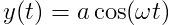
其中 ω 很大（远大于摆的自然频率）、a 很小。摆锤相对支点的位置由角度 θ 描述（θ = 0 为竖直向下，θ = π 为竖直向上、即倒立）。
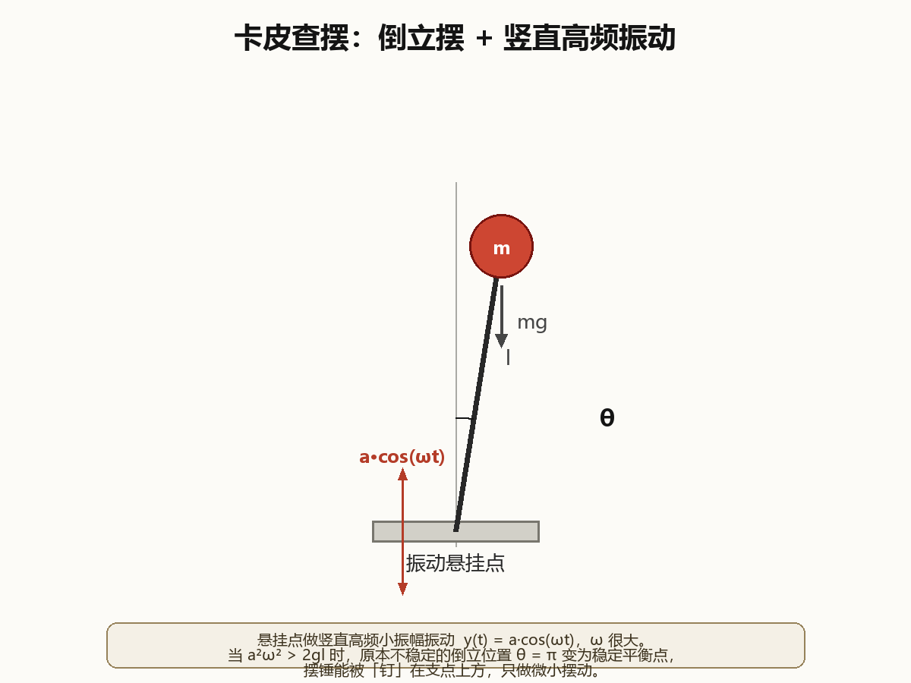
忽略支点振动的动能项（只含时间的项不影响运动方程），拉格朗日量为：
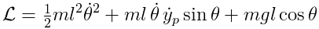
二、运动方程
由欧拉–拉格朗日方程得到完整的运动方程（未做任何近似）：
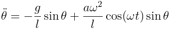
右边第二项来自支点的振动。可以把它看成时变的「等效重力」：
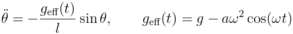
当 a·ω2·cos(ωt) > g 时，等效重力瞬时反向——支点向上的加速度超过重力，摆锤被「推」向倒立方向。这正是倒立能稳定的直觉来源。
三、快慢分离与等效势能
卡皮查的关键思想是把运动拆成「慢」与「快」两部分：
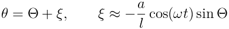
其中 ξ 是支点振动驱动的小幅高频抖动（≈ (a/l)·sinθ 量级），Θ 是慢变量。对完整运动方程在一个高频周期内做平均，快变量被消掉，得到慢变量的运动方程：
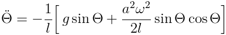
这个方程等价于一个「慢摆」在等效势能里运动：
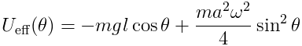
第一项是重力势能（倒立位置 θ = π 是极大值，不稳定）；第二项来自高频振动的平均效应，它在 θ = 0 和 θ = π 处都取极小、在 θ = π/2 处取极大。把第二项叠加到第一项上，倒立位置从「山尖」被压成「谷底」——条件就是：
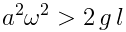
2gl">卡皮查稳定性条件：当 a2ω2 > 2gl 时，倒立位置 θ = π 是等效势能的局部极小，倒立摆被稳定。等价地，悬挂点的峰值速度 a·ω 需超过 √(2gl)。
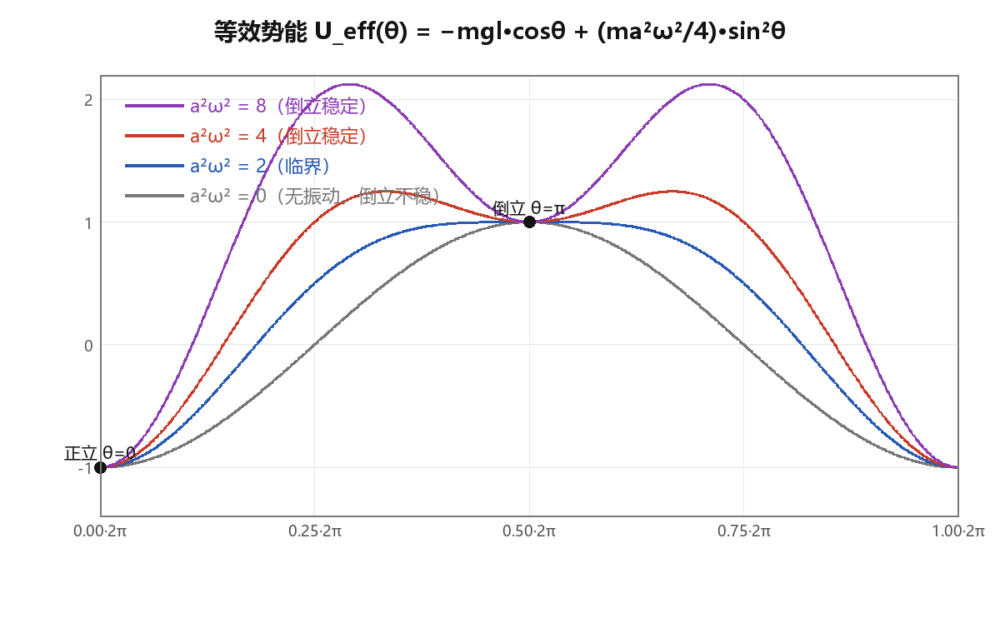
四、数值模拟与动画
为验证上面的近似推导，我用 4 阶 Runge–Kutta 直接积分完整运动方程（不引入快慢分离近似），无量纲取 g = l = 1，初始都放在近倒立位置 θ = π − 0.1。
| 情形 | 参数 | a2ω2 | 结果 |
|---|---|---|---|
| 强振动 | a = 0.05, ω = 40 | 4.00 | 倒立稳定（θ 均值 ≈ 1.00π，摆幅 0.2 rad） |
| 弱振动 | a = 0.02, ω = 40 | 0.64 | 倒下 |
| 无振动 | a = 0 | 0 | 倒下 |
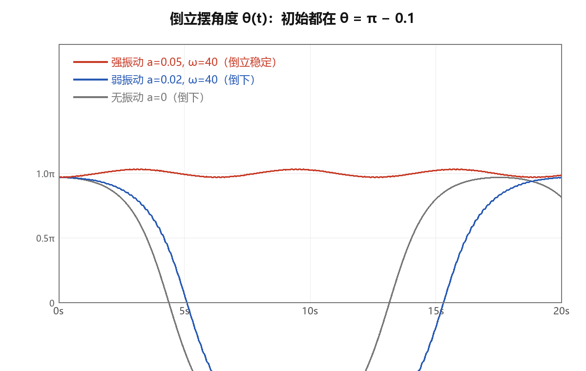
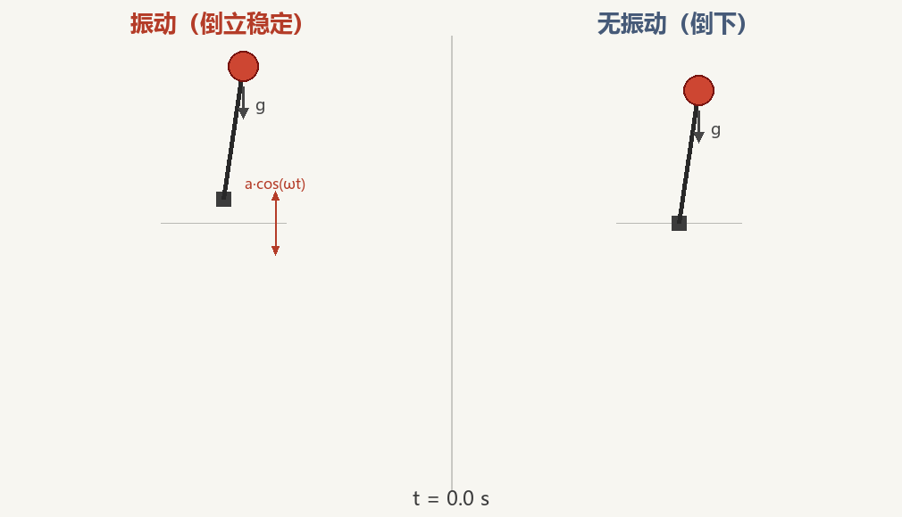
模拟与推导均用本地脚本完成：完整运动方程的 RK4 积分（numpy），示意图与二维动画由自研渲染器绘制，公式由本地 LaTeX（latex + dvipng，Latin Modern 字体）排版。